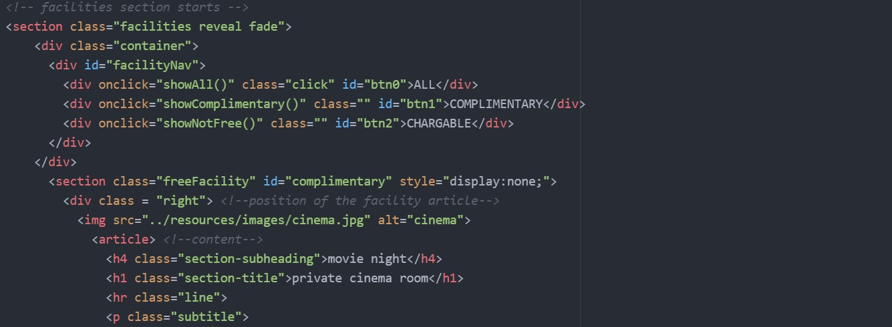
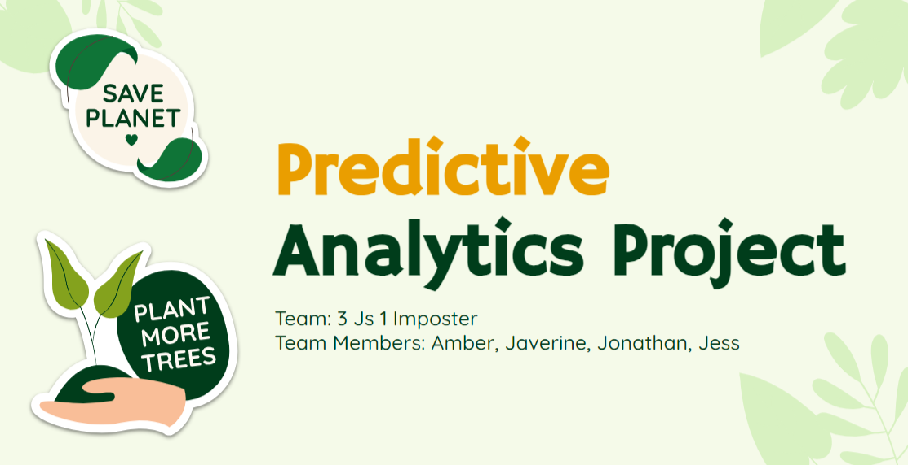

Le Timeless Trésor
Project Scope/Client's Problem
Task: To design and develop an intuitive hotel web user interface as a team using HTML, CSS and JavaScript
My Role & Solution
Created: Facilities and Services pages, and Facility booking forms
My Work Process
Planning:
Firstly, we decided on a Luxury Vintage Hotel Website.
My team and I found some competitors to our hotel and did an analysis to find out what features made it good and what could be better to make our website comparable to theirs. We identified Marina Bay Sands and the Shangri-La Resort as prime competitors.
We noted that they used sophisticated and consistent colour schemes, and sufficient whitespaces to display a modern and classy look.
We proceeded to conduct a survey to see what users expect from our website, considering our vintage theme. With their responses, we created a color palette for our website to have a consistent feel.

Next, we needed to choose a suitable name that represented our core values of vintage and luxury. After much research, we decided on the name "Le Timeless Trésor".
The name is a mix of english and french, with trésor translating to treasure. We chose this name as we wanted the memories that our guests make at our resort to be a timeless treasure for them.
Then, we designed our logo on Adobe Photoshop, using a treasure box and a clock which are literal meanings of our resort name.
With our structure settled, I could do my pen and paper prototype to envision what I would like my final website to look like. I included Gestalt principles, Nielsen 10 heuristic principles, to ensure that my websites were minimalistic and easy to navigate.

Coding:
We created a Git respository and added each other as contributors so that we could all collaborate on the same file. I coded the website on Atom. I also added comments and used descriptive class & ID names so it's easy to understand my codes.

I also added media to make my webpages responsive to the different screen sizes, while remaining the same feel.
Outcome & Results Achieved
Finally, with our own complete webpages, we linked up our webpages and did some final checking to make sure our website felt consistent throughout. Feel free to check out our website with the link down below.
Website LinkIs Singapore is a good place to live in?

Project Scope/Client's Problem
The team is to gather requirements from the key stakeholder(s) of your choice (who is your potential target user of your solution) to understand the user needs and data visualisation report objectives through a requirements elicitation interview session. The team is also required to document the requirements using the user story approach.
The team is to provide a data-driven solution for the key stakeholder(s) using data visualisation tool (Microsoft Power BI) by applying ETL (Extract, Transform and Load) techniques, visualisation techniques and statistical modelling techniques.
Hypothesis: Singapore is a good place to live and work in.
My Role & Solution
Problem Statement chosen: Singapore has a good healthcare system
My Work Process
Business understanding:
We researched online on key factors that affects people's favourability of a place to live and work in.
My team and I decided to focus of these aspects/problem statements:
- Damian(Leader): Singapore is a Very Safe Country
- Natelie: Singapore has a Good Education System
- Javerine: Singapore has Good Housing.
- Amber(Myself): Singapore has a Good Healthcare System
Interview:
Crafted interview questions regarding my problem statement to gather user requirements using user story.
My team and I included a global interview question: "If you could create a country, what would it be like?", which gave our interviewees an unrestricted space to share their dreams and desires, enabling us to gather
perspectives that we might have otherwise missed. After we had finished interviewing, we created personas with a summary of each of the interviews, which we used to create user stories.
Data Preparation:
Sourced datasets from reliable government statistical sites like moh.gov.sg, SingStat, etc. From the user stories, they brought up 3 main points, Quality, Cost, and Efficiency, hence, I decided to focus on these points.
Additionally, I tried to used data that had at least 10 years of data and the most recent year being at least 2019 so that I can analyse the trend and where Singapore's Healthcare currently stands.
For Quality, I used the government health expenditure, trust level and life expectancy as they influence and is an indicator the quality of healthcare.
For Cost, I've included the monthly household expenditure, Consumer price index CPI or better known as the inflation rate, subsidy rates, and cost comparison with other countries and different ward types to give a better understanding of the cost of healthcare in Singapore.
For Efficiency, I've used the number of healthcare professionals, facilities, beds and wait time as a measure of efficiency because it shows the growing capacity of Singapore’s healthcare over time.
After downloading all the datasets, I categorised them by their factor and started to clean the data:
- Replace "na" with 0
- Remove empty columns
- Rename columns
- Transpose the tables
Data Visualisation:
Each factor (Quality, Cost, Efficiency) had their own report page to easily view and identify each factor. A variety of visualisation types was used to best present the data. The finalised the reports underwent multiple iterations, each given to my team mates and past interviewees to interact with, before
constructive feedback was given to improve it. I included slicers to allow user to filter the report according to their own preferences.
Statistical Modelling:
Usage of linear regression, forecast and decomposition tree made it easier to anaylse the trend and results of the chosen data.
Outcome & Results Achieved
Quality Dashboard:
I used the government health expenditure as a measure of quality because increasing expenditure means that more money can be used to improve the system like increasing healthcare subsidies, attracting more talented healthcare workers or investing in more technologically advanced medical equipment. Then the trust level was used as it is directly proportional to the quality and effectiveness of healthcare so the higher the trust level the better the quality. I’ve highlighted Singapore in red so it is easier to identify Singapore. Additionally, I've included life expectancy as a measure of quality as a good healthcare system would be able to extend their patient’s life expectancy by providing curative care. From this comparative line graph, we can see a drastic differencebetween Singapore’s and the world average’s life expectancy which implies that Singapore’s healthcare quality is above average. Next, in this forecast, we can see that there is an increasing trend for life expectancy in Singapore suggesting that the effectiveness and quality of healthcare would also continue to increase.
Cost Dashboard:
From this table showing the CPI, we can see that the prices have been increasing until 2019 which is the benchmark year. The CPI has dropped for 2020 and 2021 meaning the cost of healthcare decreased during these 2 years. Next, this visual is a comparative bar graph (Subsidy rates based on monthly per capita household income (PCHI) for B2/C wards) that shows the subsidy given by the government to lessen the financial burden of lower-income residents. With this data, our users can use it and know more about the subsidies provided as it was one of their concerns and be more prepared about finances in the future. Additionally, from this horizontal bar graph visual: (Median Total Bill based on Ward type for Stroke Patients), we can tell that there are many options in Singapore’s healthcare, which contributes to the different healthcare costs. Since the ward type does not affect the quality of service and only affects the level of privacy provided, the bill for stroke patients is relatively affordable using the cost of ward C bed. Furthermore, stroke is one of the top critical illnesses in Singapore, so this can give users a rough estimate of how much it would cost.
Efficiency Dashboard:
This decomposition tree displays the total number of facilities each year in descending order, as we see that the most recent year is on the top, suggesting that the number of facilities is increasing over time, this makes it more accessible to people and lowers the possibility of overcrowding in healthcare facilities, which increases its efficiency. Additionally, the number of beds is increasing meaning that hospitals would be able to admit more patients and the waiting time would decrease. Next, this is a forecast line graph that shows the number Singapore residents per healthcare staff over the years. The final results show the available manpower in healthcare, where the lower the value, the better the efficiency as the medical staff can devote their attention to a smaller group of people. Since the trend is decreasing and forecasted to decrease, there will be sufficient manpower to handle the workload in healthcare facilities and provide medical attention to patients efficiently and timely.
Now, we will tap into view wait times, where we can see the spread of polyclinics around Singapore and its respective median wait time. The polyclinics are well spread and if we hover over the bubbles we can see that the consultation wait times are not that long and with the longest consultation wait time being 28 mins. If we take a look at that qna turned card visual at the top right, we can see that the average total wait time, inclusive of registration and consultation wait time was only 15 mins which is a very short waiting time although the best is if there were no waiting needed at all, which may be possible if they visited on off-peak timings.
Statistical Modelling:
This is a linear regression model and the information above gives a better understanding of the visual. For R2 and Corr, the closer it is to 1 the better the prediction and relationship respectively. Overall, this means that the model shows a strong relationship between the two variables, so the higher the government health expenditure, the lower the Singapore population per medical staff. This means that the increased expenditure was possibly used to invest in hiring and attracting more healthcare workers. And since we know the government healthcare spending has been on an upward trend, this means that the healthcare manpower would be able to expand and increase its efficiency .
Sub-hypothesis Conclusion:
Overall, Singapore Visuals suggest that its healthcare system has established itself by ensuring it was equitable, efficient and ever-improving. Its variety of healthcare options and subsidies ensures that everyone regardless
of income or social standing can get medical attention. Therefore, I support that Singapore has a good healthcare system.
Hypothesis Conclusion:
Singapore has devoted a lot of resources, to establish Singapore in many aspects. It has ensured that facilities and services are accessible, affordable, and reliable for everyone to use and this creates a united support system where it is inclusive to everyone. Its high cost of living is parallel to the quality provided. The government has also ensured that there are sufficient subsidies to help relieve the financial burden. As result, we have come to the conclusion that Singapore is a good place to live and work, supporting our overarching hypothesis.
Dashboard Demo
Feedback
- Excellent Visuals, Design and integration.
- Good teamwork and presentation skills.
- Selected to be displayed for open house next year.
- Nominated for Outstanding Project Presentation.
Improving Singapore environment sustainability by reducing food, plastic, energy, and carbon emissions consumption
Project Scope
Background Information:Many Singaporeans share the sentiment that addressing climate change might seem futile, given concerns about costs, inconvenience, and limited impact. In 2021, 67% worried about costs, 66% saw it as inconvenient, 27% struggled with sustainable habits, 24% found the status quo insufficient, and 22% deemed individual action insignificant. While reversing climate change demands persistent effort, there's a drive to reduce emissions, plastic, food, and energy wastage. Singapore's Environmental Performance Index (EPI) reflects this effort, with a 50.9 score in 2022, ranking 44th globally, showing a 3.7 increase over a decade. Despite a considered "poor" score, the upward trend signals improving sustainability. The urgency of environmental pollution's impact necessitates global efforts in reducing waste and emissions.
Business Scenario:Our project aims to provide actionable insights into current consumption trends, aiding community organizations, non-profits, and grassroots initiatives in resource reduction efforts. Through predictive analysis, we predict resource consumption patterns across sectors, empowering businesses to align with the Green Plan's Objectives. By optimizing resource management and fostering sustainability, we contribute to a greener future and business growth. Our initiative also benefits academia, offering valuable data for studies in sustainability and predictive modeling. Emphasizing awareness, innovation, and sustainable practices, our project supports a more environmentally responsible future. Timely action is crucial for reversing environmental impacts and securing a planet for future generations
Business Goal:Improving Singapore environment sustainability by reducing food, plastic, energy, and carbon emissions consumption.
Stakeholders:Agencies involved in Singapore Green Plan 2030
Success Criteria(s):- Develop predictive models of less than 0.05 Validation ASE
- (And/Or) Adjusted R-Square to be greater than 0.7
My Objectives
Predict the top contributors to plastic waste to raise awareness and reduce plastic wastes in those areas.